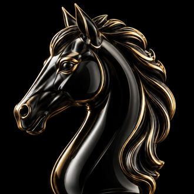

Your old knight, zoomed in on the head. No chess base.
Clean, bold horse head silhouette.
The chess knight, flat and bold. Reads as "knight" instantly.
Thin outline version. Lighter, more techy.
A whole horse, mid-gallop. Fun, fast energy.